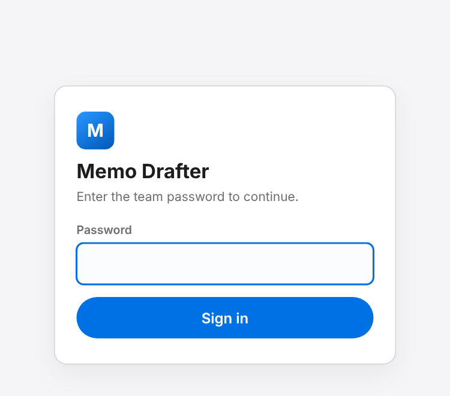
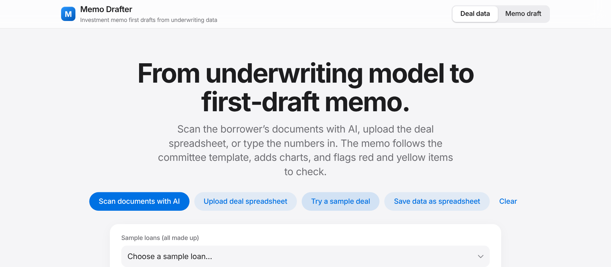
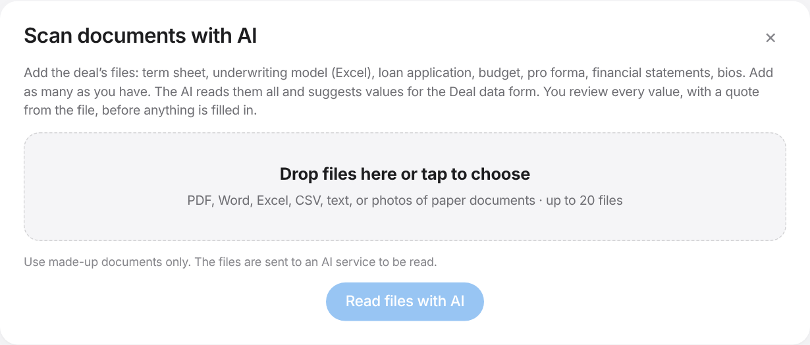
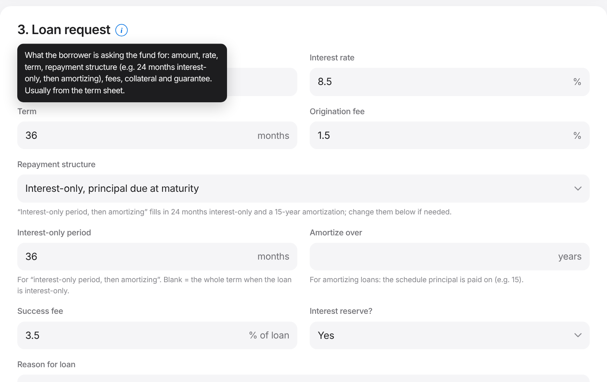
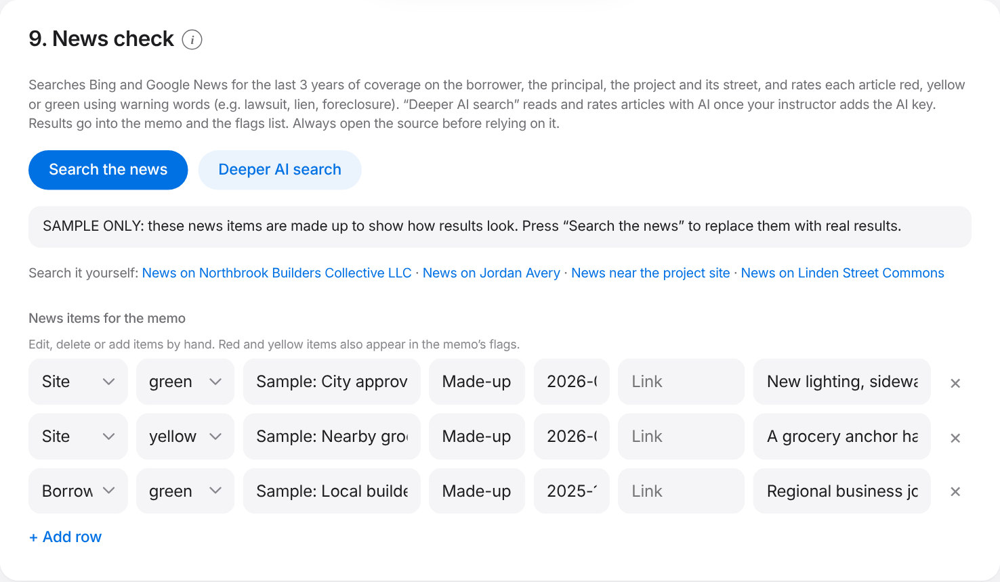
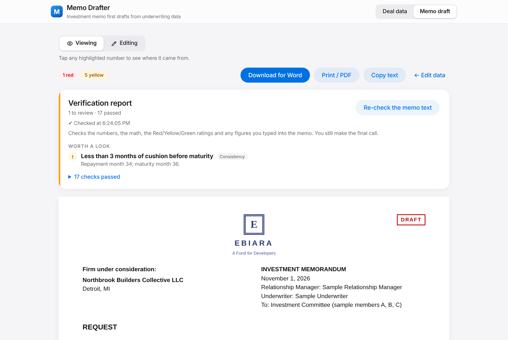
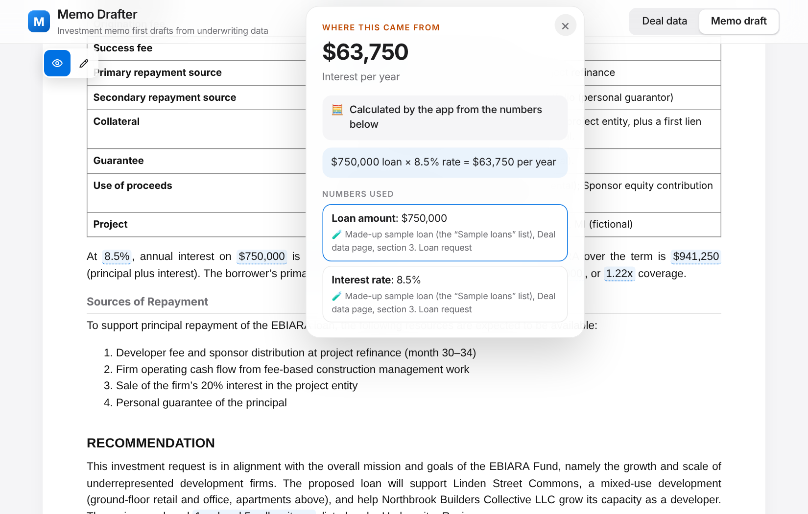
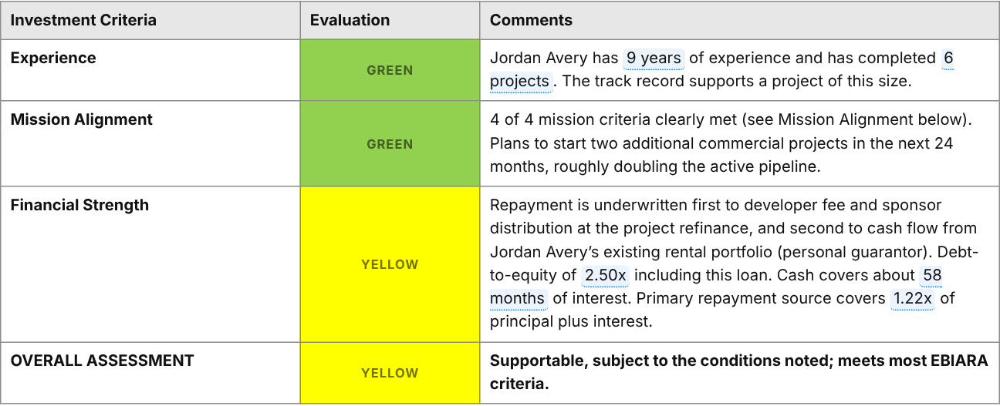

For EBIARA underwriters. Turns a deal’s underwriting data into a first-draft investment memo in the fund’s committee format, then checks it.
Live link: https://memo-drafter.onrender.com · Password: ask your team lead (it is never written in this guide).
1. Sign inEnter the team password and press Sign in. Each device stays signed in for 30 days. If you see “This site is locked”, the site has no password set yet: tell whoever manages the tool. 2. Start a dealScan documents with AI reads the borrower’s files. Upload deal spreadsheet loads a saved deal. Save data as spreadsheet keeps a copy of your inputs. Clear starts over. |   Sign-in page and the Deal data start screen. |
3. Scan the deal documents (optional)Add the term sheet, underwriting model (Excel), loan application, budget, financial statements or bios, up to 20 files. Press Read files with AI. The AI suggests a value for each field, with a quote from the file. Tick the ones that are right and press Fill in. Nothing is filled in until you approve it. Only scan documents you are allowed to share with an AI service. |  Scan documents with AI. |
4. Check the Deal data sectionsWork down sections 1–12. The (i) explains each one. Useful details:
|  Section 3 with its (i) explanation open. |
5. News check and extra sectionsSection 9: Search the news looks up the borrower, principal, project and street (last 3 years) and rates each article by warning words. Deeper AI search reads and rates articles with AI. Red and yellow items become memo flags. Delete anything that isn’t about this deal. Section 12: add your own memo section, either Just this memo or All future memos (kept on this computer’s browser), and choose where it goes. |  News check (section 9). |
6. Write the memo and read the Verification reportPress Write the memo →. The memo follows EBIARA’s format: Request, Investment Merits, Project Breakdown, Sources & Uses, Mission Alignment, Neighborhood Impact, Financials, Repayment, Risks & Mitigants, Loan Sizing, Recommendation, Approvals and Exhibits. The Verification report above the memo re-checks the numbers, the math and the ratings:
[… to be added] marks information still missing. |  Memo draft with the Verification report. |
7. Check where any number came fromIn Viewing mode (eye icon), tap any highlighted number. The card shows the box it was typed in, the file and quote it was scanned from, or the math the app did. Go to this in Deal data jumps to the box. Switch to Editing (pencil) to type directly in the memo, then press Re-check the memo text. 8. ExportDownload for Word keeps the formatting and colors. Print / PDF and Copy text are also available. If checks failed, the app asks you to confirm first. |  Tapping $63,750 shows the formula and its inputs. |
|  Investment Merits with the fund’s color evaluation cells. |
| What you see | What to do |
|---|---|
| Page takes a long time to open | Normal on the free plan after a quiet period: wait up to a minute and reload. |
| “This site is locked” / sign-in page keeps returning | The team password isn’t set or was changed. Ask whoever manages the tool for the current password. |
| “Please sign in again” on an AI button | Your sign-in expired: reload the page and enter the password. |
| AI says the key was rejected or is out of credit | Tell whoever manages the tool. The AI key in Render needs replacing or topping up. Everything else still works. |
| “The news sources sent back no results at all” | The news sites are limiting requests: try again later, or use the “Search it yourself” links. |
| Scan found nothing / values look wrong | Add the term sheet or underwriting model. Don’t approve values whose quote doesn’t match. |
| Your inputs disappeared | Inputs are kept in this browser only. Use “Save data as spreadsheet” and reload it with “Upload deal spreadsheet”. |